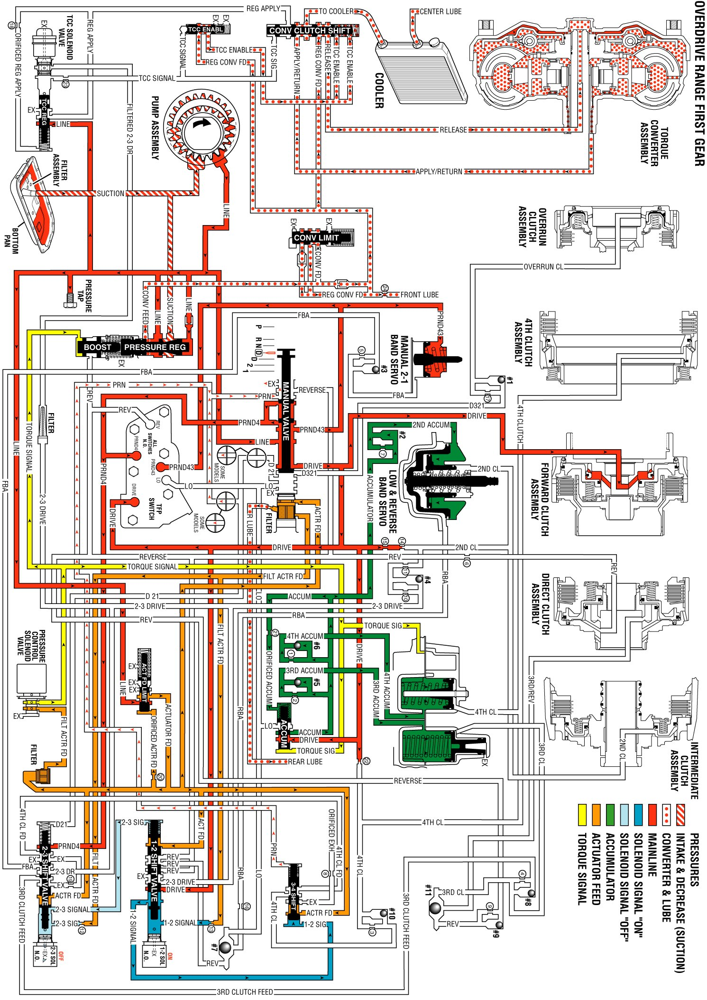

Overdrive Range, First Gear
Overdrive Range, First Gear
When you move the gear selector lever to the Overdrive position, the manual valve is repositioned in order to allow line pressure to flow in its respective circuits.
Manual Valve
In the Overdrive range first gear, line pressure from the pressure regulator valve is directed as PRND4, PRND43, and Drive fluid pressures. The PRND4 fluid pressure is directed to the Automatic Transmission Fluid Pressure (TFP) Manual Valve Position Switch Assembly and to the 2-3 shift valve. The PRND43 fluid is directed to the TFP manual valve position switch and to the manual 2-1 band servo. The Drive fluid is directed to the TFP manual valve position switch, the forward clutch, the 1-2 shift valve, and the accumulator valve.
Automatic Transmission Fluid Pressure (TFP) Manual Valve Position Switch Assembly
Drive, PRND4, and PRND43 fluid pressures from the manual valve are directed to the DR, PRND4, and the PRND43 switches on the TFP manual valve position switch. This sends a signal to the PCM that the transmission is in Overdrive range.
1-2 Shift Solenoid (1-2 SS) Valve
When the 1-2 SS valve is energized, 1-2 signal fluid pressure forces the 1-2 shift valve to the extreme left against a spring force.
2-3 Shift Solenoid (2-3 SS) Valve
When the 2-3 SS valve is de-energized, 2-3 signal fluid exhausts through the solenoid. A spring force holds the 2-3 shift valve to the extreme right.
1-2 Shift Valve
Drive fluid pressure from the manual valve is held at the 1-2 shift valve in order to be utilized in other gear ranges.
2-3 Shift Valve
PRND4 fluid pressure from the manual valve is held at the 2-3 shift valve in order to be utilized in other gear ranges.
3-4 Shift Valve
1-2 signal pressure holds the 3-4 shift valve to the extreme left. PRN fluid pressure is blocked by the manual valve.
Forward Clutch
Drive fluid pressure from the manual valve is directed through the case, the pump housing, and the turbine shaft into the forward clutch housing. This applies the forward clutch, shifting the transmission into first gear.
Overdrive Range, First Gear
